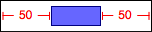
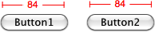
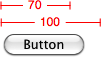
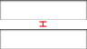

With only inequality constraints at your disposal, constraining common layout scenarios quickly becomes tedious. To horizontally align 4 buttons within a panel with a gap of 10px requires something like:
{% highlight css %}
#panel[left] + 10 == #button1[left];
#button1[right] + 10 == #button2[left];
#button2[right] + 10 == #button3[left];
#button4[right] + 10 == #button4[left];
#panel[right] - 10 == #button4[right];
{% endhighlight %}
Not to mention the obligatory size & vertical constraints needed to fully specify the panel and buttons - ugh...
This is where Grid-flavored VFL comes in. The brains at Apple came up with VFL as a more programatic way to install constraints in Cocoa AutoLayout. The idea is rather simple, the syntax should visually depict the layout. GSS takes the good parts of VFL and makes it more suitable for CSS, throws in some sugar and drops the cruft. So the above example of 4 buttons in a panel becomes:
{% highlight css %}
@horizontal |-[#button1]-[#button2]-[#button3]-[#button4]-| in(#panel) gap(10);
/* which is the same as */
@horizontal |-10-[#button1]-10-[#button2]-10-[#button3]-10-[#button4]-10-| in(#panel);
/* which is the same, assuming we're using button tags, as */
@horizontal button in(#panel) gap(10);
{% endhighlight %}
Basics
Horizontal layouts can be created with the CSS directive `@h`, `@horizontal` or `@-gss-horizontal`.
Vertical layouts with the CSS directive `@v`, `@vertical` or `@-gss-vertical`.
An element is queried within square brackets, `[ Selector ]`, and a `connection` between elements is represented using a hyphen (or two hyphens separated by a number to represent the number of pixels apart the views should be). Similarly, a `cushion` between elements is made with a tilda.
Internally, GSS compiles VFL into CCSS (in)equality constraints, so after each VFL example the compiled CCSS is included.
**WARNING:** The examples below are *under-constrained*, they only constrain elements along one dimension of alignment, to ensure an element's size & position is fully-specified you will need to add more constraints.
Connections
Two elements can be horizontally connected without any gap. Live example.
{% highlight css %}
/* VFL */
@h (#maroon)(#blue);
/* Equivalent CCSS */
#maroon[right] == #blue[left];
{% endhighlight %}
Connection Gaps
To align elements with a gap, use a hyphen and `gap( Number | Constraint Variable | Element Property )`:
{% highlight css %}
/* VFL */
@h (#button)-(#textField) gap(8);
/* or */
@h (#button)-8-(#textField);
/* Equivalent CCSS */
#button[right] + 8 == #textField[left];
{% endhighlight %}
If no `gap()` is defined, but a hyphen is used to make a connection then a `standard gap` variable is created,
{% highlight css %}
/* VFL */
@h (#button)-(#textField);
@v (#button)-(#textField);
/* Equivalent CCSS */
#button(right) + hgap == #textField(left);
#button(bottom) + vgap == #textField(top);
{% endhighlight %}
The `hgap` & `vgap` variables can be used like normal variables, and again like all constraint variables are globally scoped.
User defined variables can be used for gaps as well. Live example.
{% highlight css %}
/* VFL */
@h (#box1)-(#box2) gap(col-gap);
/* Equivalent CCSS */
#box1[right] + col-gap == #box2[left];
{% endhighlight %}
{% highlight css %}
/* VFL */
@h (#b1)-100-(#b2)-(#b3)-(#b4) gap(#box1[width]);
/* Equivalent CCSS */
#b1[right] + 100 == #b2[left];
#b2[right] + #box1[width] == #b3[left];
#b3[right] + #box1[width] == #b4[left];
{% endhighlight %}
Containment within an Element
For alignment contained within an element, surround a VFL alignment with `|`'s and use `in( Selector )`. Live example.

{% highlight css %}
/* VFL */
@h |-50-(#purple-box)-50-| in(#container);
/* Equivalent CCSS */
#container[left] + 50 == #purple-box[left];
#container[right] - 50 == #purple-box[right];
{% endhighlight %}
The default containing element selector is `&`.
The above example can be written:
{% highlight css %}
/* VFL */
#container {
@h |-50-(#box)-50-|;
}
/* Equivalent CCSS */
#container {
&[left] + 50 == #purple-box[left];
&[right] - 50 == #purple-box[right];
}
{% endhighlight %}
Outer-Gaps
You can specify the gaps to a containing element using `outer-gap( Number | Constraint Variable | Element Property )`, which overrides `gap()` if specified:
{% highlight css %}
/* VFL */
#container {
@h |-(#a)-(#b)-(#c)-|
gap(8) outer-gap(16);
}
/* Equivalent VFL */
@horizontal |-16-(#a)-8-(#b)-8-(#c)-16-| in(#container);
{% endhighlight %}
Alignment to Points
Elements can be aligned relative to arbitrary positioned points using `< Number | Constraint Variable | Element Property >`
Live example.
To horizontally align two buttons, each 8px from the center of the window:
{% highlight css %}
/* VFL */
@h (#btn1)-<::window[center-x]>-(#btn2) gap(8);
/* Equivalent CCSS */
#btn1[right] + 8 == ::window[center-x];
::window[center-x] + 8 == #btn2[left];
{% endhighlight %}
Alignments can be positioned within points:
{% highlight css %}
/* VFL */
@h <#wall[center-x]>-(#poster)-(#clock)-<::window[right])> gap(7);
/* Equivalent CCSS */
#wall[center-x] + 7 == #poster[left];
#poster[right] + 7 == #clock[left];
::window[right] - 7 == #clock[right];
{% endhighlight %}
Numbers, variables and arithmetic can be used:
{% highlight css %}
/* VFL */
@v <100>(#box)<[row2]>;
/* Equivalent CCSS */
100 == #box[top];
#box[bottom] == [row2];
{% endhighlight %}
Consecutive points are not constrained to each-other:
{% highlight css %}
/* VFL */
@h (#btn1)-<#col3[left]>
<#col4[right]>-(#btn2)
gap(8);
/* Equivalent CCSS */
#btn1[right] + 8 == #col3[left];
#col4[right] + 8 == #btn2[left];
{% endhighlight %}
## Cushions
Cushions are similar to connections gaps, only they use inequality instead of equality constraints.
Live example.
{% highlight css %}
/* VFL */
@h (#box1)~(#box2);
/* Equivalent CCSS */
#box1[right] <= #box2[left];
{% endhighlight %}
{% highlight css %}
/* VFL */
@v (#box1)~100~(#box2);
/* Equivalent CCSS */
#box1[bottom] + 100 <= #box2[top];
{% endhighlight %}
{% highlight css %}
/* VFL */
@h (#box1)~-~(#box2);
@v (#box3)~-~(#box4);
/* Equivalent CCSS */
#box1[right] + [hgap] <= #box2[left];
#box3[bottom] + [vgap] <= #box4[top];
{% endhighlight %}
Size Predicates
Size Predicates allow elements to be sized in the dimension parallel with the alignment.
Live example.
{% highlight css %}
/* VFL */
@h (#button(==100));
/* Equivalent CCSS */
#button[width] == 100;
{% endhighlight %}

{% highlight css %}
/* VFL */
@h (#button1(==#button2));
/* or */
@h (#button1(==#button2[width]));
/* Equivalent CCSS */
#button1[width] == #button2[width];
{% endhighlight %}
Multiple size predicates:

{% highlight css %}
/* VFL */
@h (#flexibleButton(>= 70, <= 100)));
/* Equivalent CCSS */
#flexibleButton[width] >= 70;
#flexibleButton[width] <= 100;
{% endhighlight %}
## VFL Selectors
All previous example of VFL expressions use basic [selectors](/guides/selectors). But you can also use combinators in VFL expression
like this:
{% highlight css %}
@v | (.featured > article ~ .title) | in(#elm > .class .class2"_fallout")
{% endhighlight %}
## VFL Splat
When a selector in your VFL expression finds more than one element, due to [plural binding](/guides/selectors/#pluralbinding),
if the number of element within each selection expression are not equal then some elements will not be constraint.
Live example.
In the this example, the last two `article` elements will not be constrained since there're no `section` element to bind to.
As you can see in the CCSS generated constraints the elements are getting using plural binding.
{% highlight css %}
{% endhighlight %}
If the number of selected elements matches, the position of the elements within each collection of selected
elements will overlap. Since you are constraining a collection of elements against another collection of elements
and not elements of the collection against each other. Live example.
{% highlight html %}
{% endhighlight %}
Splats enable GSS to iterate over the collection of selected elements and position elements
next to each other. Live example.
{% highlight css %}
{% endhighlight %}
In the previous example, the two `section` will be positioned next to each other with a gap of 10px. The
three articles will be positionned next to each other with a gap of 20px. Finally the two div will be right next to each
other without any gap.
## Virtual with VFL
[Virtuals](/guides/constraints) can be created and/or positionned using VFL expressions.
## VFL rulesets
You can use a VFL expression as the rule of a [rulesets](/guides/constraints/#rulesets). It will
behave in the same way as a selector rule. GSS will create a collection of all elements involved
in the VFL expression and iterates over them.
This allows you to do interesing things. For example, if you want all the elements of the VFL expression
to have the same width you can do the following:
{% highlight css %}
@h |-(section)-10-...-(article)-20-...-(div)...-| in(::window) {
width: == :next[width];
}
{% endhighlight %}
## VFL Chains
Chains are a powerful mechanism to take each element within an VFL alignment (excluding a containment element & points)
and construct a chained constraint statement against a property of each element.
Live example.
Chains take the form `chain-{Property}({Head Operator} {Expression} {TailOperator})`.
The `Head Operator`, `Expression` and `Tail Operator` are optional.
The `Head Operator` is assumed to be `==`.
If no `Expression` is given than the elements properties are chained together.
If unspecified, the `Tail Operator` is inferred from the `Head Operator`.
For example,
{% highlight css %}
/* VFL */
@h (#b1)(#b2)(#b3)(#b4) chain-height chain-width(250);
/* or, more explicitly */
@h (#b1)(#b2)(#b3)(#b4) chain-height(==) chain-width(== 250 ==);
/* Equivalent CCSS */
#b1[right] == #b2[left];
#b2[right] == #b3[left];
#b3[right] == #b4[left];
#b1[height] == #b2[height] == #b3[height];
#b1[width] == 250 == #b2[width] == 250 == #b3[width];
{% endhighlight %}
{% highlight css %}
/* VFL */
@v |-8-(#b1)(#b2)-8-|
in(#panel)
chain-center-x(::window[centerX])
chain-width(>= 50);
/* or, more explicitly */
@v |-8-(#b1)(#b2)-8-|
in(#panel)
chain-center-x(== ::window[centerX] ==)
chain-width(>= 50 <=);
/* Equivalent CCSS */
#panel[top] + 8 == #b1[top];
#b1[bottom] == #b2[top];
#b2[bottom] + 8 == ::window[bottom];
#b1[centerX] == #panel[center-x] == #b2[center-x];
#b1[width] >= 50 <= #b2[width];
{% endhighlight %}
## VFL Strength & Weight
As established with CCSS, Strength & Weight can be used in VFL statements using `!{Strength}{Weight}` at the end of a statement. Strengths can be `weak`, `medium`, `strong` & `require`. Weights are positive integers. As a rule of thumb, use Strengths first & foremost & resort to weights as a last resort.
Alignment Strength & Weight:

{% highlight css %}
/* VFL */
@v (#topfield)-10-(#bottomfield) !strong100;
/* Equivalent CCSS */
#topfiled[bottom] + 10 == #bottomfield[top] !strong100;
{% endhighlight %}
Size Predicates have their own Strength & Weight:
{% highlight css %}
/* VFL */
@v (#box1(>= [row-height] !require, == 20 !strong))(#box2)(#box3) !medium;
/* Equivalent CCSS */
#box1[height] == 20 !strong;
#box1[height] >= [row-height] !require;
#box1[bottom] == #box2[top] !medium;
#box2[bottom] == #box3[top] !medium;
{% endhighlight %}
Chains have their own Strength & Weight:
{% highlight css %}
/* VFL */
@vertical (#b1)(#b2)(#b3)(#b4)
chain-width(==!weak10)
chain-height(<=150>=!required)
!medium;
/* Equivalent CCSS */
#b1[bottom] == #b2[top] !medium;
#b2[bottom] == #b3[top] !medium;
#b3[bottom] == #b4[top] !medium;
#b1[width] == #b2[width] == #b3[width] == #b4[width] !weak10;
#b1[height] <= 150 >= #b2[height] <= 150 >= #b3[height] <= 150 >= #b4[height] !required;
{% endhighlight %}